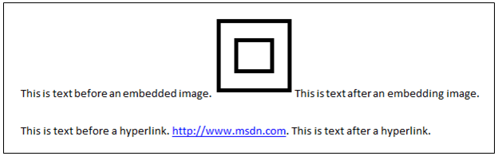
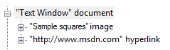

title: TextChild Control Pattern description: Introduces guidelines and conventions for implementing ITextChildProvider, including information about properties and methods. The TextChild control pattern is used to access an element’s nearest ancestor that supports the Text control pattern. ms.assetid: B33BCBEF-9AD2-4A5A-871E-E97E69BE8195 keywords:
Introduces guidelines and conventions for implementing ITextChildProvider, including information about properties and methods. The TextChild control pattern is used to access an element’s nearest ancestor that supports the Text control pattern.
For example, suppose text in a document contains an embedded image and a hyperlink as shown in the following image.

If you use Microsoft UI Automation tools to examine the UI Automation tree for this document content, it might show a document element with one child element that represents the image, and another child element that represents the hyperlink. For example:

Typically, the document element in the preceding example supports the Text control pattern, but the two children of the document element do not. If a UI Automation client application has a reference to the image element or hyperlink element, the client can use the TextChild control pattern as a convenient way to access the Textcontrol pattern exposed by the containing document element.
When implementing the ITextChildProvider interface, note the following guidelines and conventions:
These properties and methods are required for implementing the ITextChildProvider interface.
| Required members | Member type | Notes |
|---|---|---|
| TextContainer | Property | None |
| TextRange | Property | None |
Â
This control pattern has no associated methods or events.
Conceptual